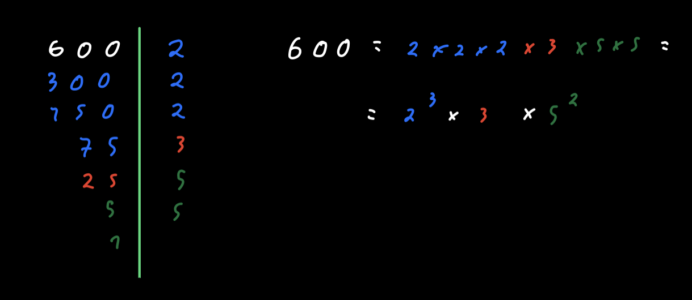

Hey people!
I'm back with our series on PE.
Last time we took a look at one of my favourite pieces of math when I was youger, and today we will look at prime numbers and prime factore.
What are prime numbers?
Prime numbers are a complex and a bit misterious topic, they have some amazing properties (like being able to express every even positive number as a sum of two prime numbers). Simply put a Prime Number is:
A number whose only factors are 1 and the number itself
Factoring
The factors of a number are the numbers that can be multiplied to give that first number. So the Prime Factors of a number are the Prime numbers that can be multiplied to give us the first number.
| Numbers | Factors | Nº of Factors |
|---|---|---|
| 1 | 1 | 1 |
| 2 | 1,2 | 2 |
| 3 | 1,3 | 2 |
| 4 | 1,2,4 | 3 |
| 5 | 1,5 | 2 |
| 6 | 1,2,3,6 | 4 |
| 7 | 1,7 | 2 |
| 8 | 1,2,4,8 | 4 |
| 9 | 1,3,9 | 3 |
| 10 | 1,2,5,10 | 4 |
As we can see the prime numbers bellow 10 are 2,3,5,7 and they all have 2 factors.
For prime factoring a number we basically just divide the number by the lowest prime until we can't divide it more with that number and repeat this process until we get a prime number (so that we divide it by itself and get 1) as seen in the picture bellow.

The problem
What is the largest prime factor of the number 600851475143 ?
The Program
We will start by defining the number we want to check for the largest prime assigning it to the n variable and assigning 0 to a max variable.
max = 0
n = 600851475143
As we saw before all primes are larger or equal to 2 (1 doesn't really count as a prime) we can just check numbers from 2 up to n.
A non prime number can be factored into the product of two factors, so none of them can be larger than the square root of the original number, as that would make the product give a number higher than the original one we can shallow our interval from 2 up to n to 2 up to sqrt(n)+1 (as the range function does not include the higher number)
# to get the sqrt function
import math
for i in range(2, int(math.sqrt(n))+1):
# do something
Since all non-prime numbers can be expressed as a multiplication of two or more primes (ie 4=2x2, 20=5x4=5x2x2,...) we need to use a while loop and see if the original number is divisible by that one:
while n % i == 0:
n = n / i
Then we check if i is larger than max
while n % i == 0:
n = n / i
if i > max:
max = i
To end this problem we just need to print the max value and Voila here you have the final program.
import math
n = 600
max = 0
for i in range(2, int(math.sqrt(n))):
print("----", )
while n % i == 0:
n = n / i
if i > max:
max = i
print(max)
As always I hope you liked this write up. More complex problems are yet to come, but until then Ask Questions.